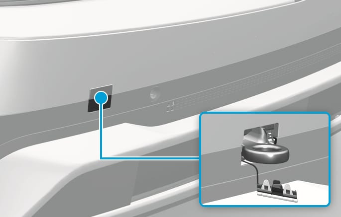
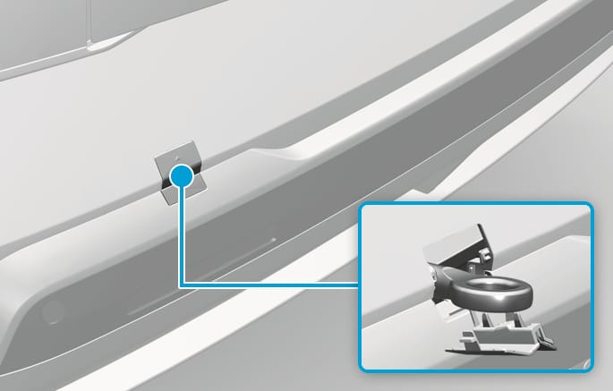
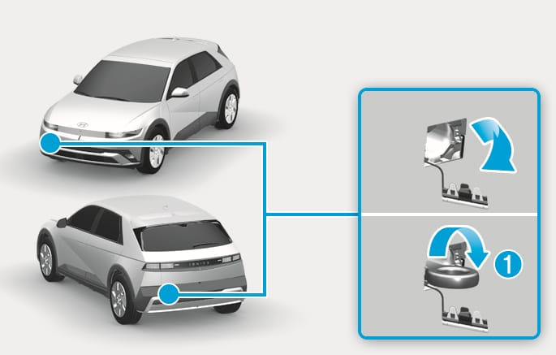
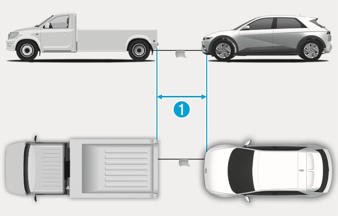

견인 후크로 견인할 때

2C_TowingHookWithGeneralVehicle

2C_TowingHookWithGeneralVehicle_2
견인 트럭 서비스를 사용할 수 없는 경우, 다음 지시에 따라 견인 후크를 설치하고 차량을 견인하십시오.
견인 후크로 차량을 견인할 때 발생할 수 있는 재산상 손실 및 인명피해를 방지하려면 취급설명서에 포함된 모든 관련 지시를 읽고 정확히 따르십시오.
-
견인 후크는 비상시 짧은 거리를 잠시 견인하는 용도로만 사용하십시오. 의도된 사용법 이외의 방식으로 사용하는 경우 심각한 사고가 발생할 수 있습니다.
-
피견인 차량 내에는 운전자가 탑승해 견인되는 차량을 적절히 조향하고 제동해야 합니다. 이 때, 운전자 이외의 인원은 피견인 차량에 탑승하지 마십시오.
-
견인 로프나 체인은 견인 후크에만 연결하십시오. 다른 부분에 연결하면 차체가 손상되거나 변형될 수 있습니다.
-
바퀴가 진흙, 모래, 도랑 등에 빠져 차량 자체의 힘으로 빠져나올 수 없는 경우 견인 후크를 이용해 견인하지 말고 직영 하이테크센터나 블루핸즈 또는 견인 전문 업체에 의뢰해 차량을 견인하십시오. 견인 후크에 과도한 하중이 가해져 견인 고리, 견인 로프 또는 체인이 파손되는 경우 심각한 부상이나 차량 손상이 발생할 수 있습니다.
-
감속기 장착 차량을 일반 차량으로 견인할 때 감속기 손상을 방지하려면 다음 지시를 따르십시오.
-
1.5 km 이내의 거리를 15 km/h 이하의 속도로 견인하십시오.
-
감속기 오일 누유가 없는 경우에만 일반 차량으로 견인하십시오.
-
견인 후크를 정확히 체결하십시오. 견인 중 견인 후크가 차체로부터 분리되는 경우 심각한 부상 또는 인명피해가 발생할 수 있습니다.
-
견인 후크는 타이어 응급 처치 키트 안에 포함되어 있습니다.
-
되도록 당사 직영 하이테크센터나 견인 전문 업체의 견인 트럭을 사용해 견인하십시오.
앞범퍼 또는 뒷범퍼의 견인 후크 홀 커버를 분리한 후 견인 후크를 설치하십시오(1).

2C_TowingHook
-
견인 후크를 끝까지 돌려 단단히 결합된 것을 확인하십시오. 견인 후크를 정확히 설치하지 않으면 견인 시 차체가 손상되거나 부품이 변형될 수 있습니다.
-
차량 견인을 위해 짧은 거리 이동 시, 견인차에 연결하거나(싣거나) 차량의 위치 조정을 위해 10 m 이내의 짧은 거리를 5 km/h 이하 속도에 한하여 이동이 가능합니다.

2C_TowingHookRange
견인차와 피견인차의 견인 후크에 로프를 확실히 고정하십시오.
-
로프 길이(1)는 5 m 이내로 하십시오.
-
로프를 쉽게 식별할 수 있도록 로프 중앙에 약 30 cm 너비의 흰색 천을 묶으십시오.
견인 후크, 견인 로프 또는 견인 체인에 과도한 하중을 줄 수 있는 갑작스런 출발이나 난폭한 운전을 피하고 주의해서 운전하십시오.
-
운전자 이외의 사람이 피견인 차량으로부터 멀리 떨어져 있도록 조치하십시오.
-
피견인 차량이 견인 차량보다 무거운 경우 견인을 시도하지 마십시오.
-
견인이 잘 되지 않을 경우 무리하게 계속해 서 견인하려 하지 말고 당사 직영 하이테크 센터나 블루핸즈, 또는 견인 전문 업체에 연 락하십시오.
-
정면으로 직진하며 견인하고 조향을 최소화하십시오.
-
견인 중 출발 및 주행 시 견인 로프 또는 견인 체인을 팽팽하게 유지한 상태로 서서히 가속하거나 감속하십시오.
-
긴 내리막길을 내려올 때 브레이크가 과열되어 제동 성능이 떨어질 수 있으므로 차량을 자주 정지해 브레이크를 식히십시오.
견인할 때 견인 차량의 운전자와 연락하면서 스티어링 휠을 잡고 견인 차량과 같은 방향으로 조향하십시오.
-
피견인차를 'N'(중립)으로 변속하고 시동 상태를 'ACC'로 유지하십시오.('변속 위치 선택하기' 참고). 추가
-
주차 브레이크를 해제하십시오.
-
견인 시에는 차량의 브레이크 성능이 저하되므로, 제동 시 브레이크 페달을 평소보다 세게 밟으십시오.
-
견인 시에는 파위 스티어링 휠 기능이 작동하지 않아 스티어링 휠이 무겁게 느껴집니다. 평소보다 강한 힘으로 스티어링 휠을 조작하십시오.
-
견인 중 로프가 느슨해지지 않도록 하고, 견인 고리에 강한 충격이나 횡방향 충격이 가해지지 않도록 주의하십시오.